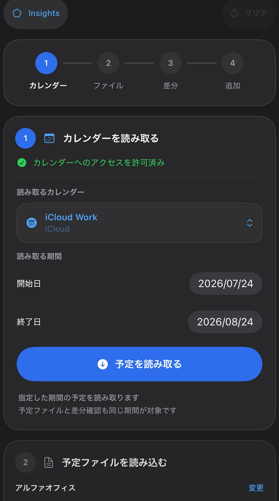
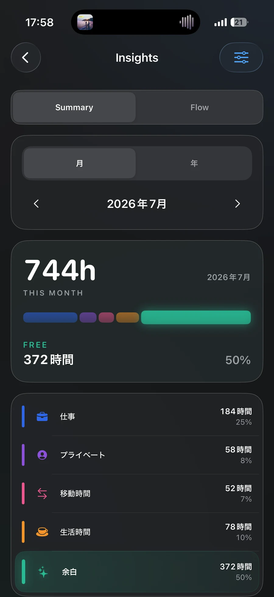
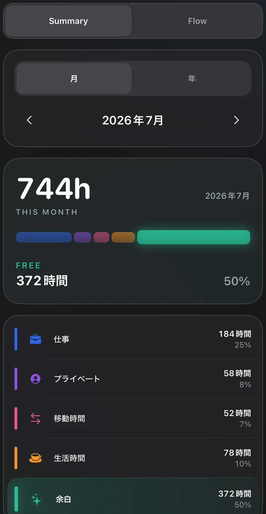
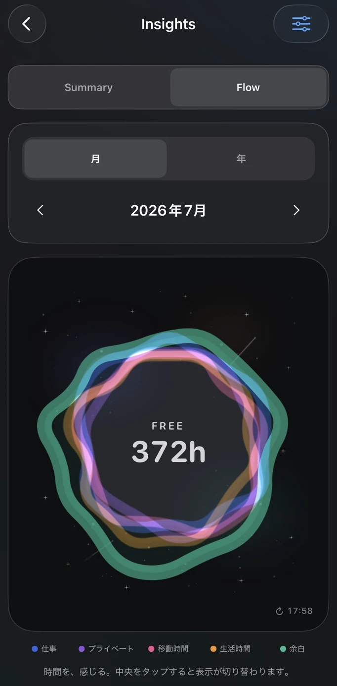

予定を安全に取り込む
カレンダー、予定ファイル、差分、追加の順で確認し、必要な予定だけを登録できます。
iPhone・iPadアプリ
CSV・ICSの予定と端末のカレンダーを照合し、追加する予定を自分で選べるアプリです。仕事、プライベート、移動時間、生活時間、余白に分類し、月や年の時間の使い方を振り返れます。

Concept
予定表は、これから何をするかを確認するためのものです。ScheduleSyncはそこから一歩進み、取り込んだ予定を自分の判断で整理し、仕事や暮らしにどれだけ時間を使っているかを見渡せるようにします。
Screens
カレンダーの読み取りから時間の内訳、流れの可視化までを実際の画面で紹介します。

カレンダー、予定ファイル、差分、追加の順で確認し、必要な予定だけを登録できます。

一か月の時間を5つの分類に分け、時間数と割合を一覧で確認できます。

分類した時間を重なり合うリングで表し、数字とは違う感覚で時間配分を眺められます。
Features
予定を安全に扱いながら、時間の使い方を自分で整理するための機能です。
CSV・ICSを端末内で読み込み、既存カレンダーと照合します。
追加候補を確認し、必要な予定だけを選んで登録できます。
仕事、プライベート、移動時間、生活時間、余白に整理し、自分の時間配分を確認します。
予定の有無だけでなく、生活全体の時間の使い方を長い期間で捉えます。
対応環境
iOS・iPadOSに対応しています。対応バージョンの詳細はApp Storeをご確認ください。
ファイル
読み込める形式や項目は、サポート情報で詳しくご案内しています。
サポート
ご質問や不具合のご連絡は、サポートページへお送りください。